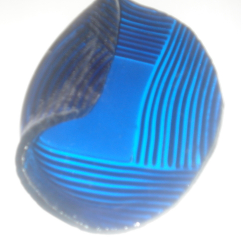
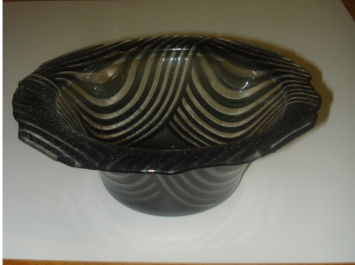

Uunista tuli
|

Piti tulla
|
Sinisen piti olla toisinto mallista.
Olin ollut huolimaton ja mitoittanut rengasmuotille jäävän lierin hieman liian kapeaksi.
Niinpä painava lasi pehemetessään valahti renkaan läpi ja
toinen reuna jopa kiertyi hauskasti rullalle.
Olin katsonut uuniin vain 5 min aikaisemmin ja kaikki näytti hyvältä.
Liian kapea lieri on syntipukki. Työ olisi saattanut onnistuakin paistamalla
vähemmän kuumassa.
Tämän mallin aihio syntyy neliskulmaisena, ja oli sahattu pyöreäksi.
Yritin laistaa yhden polttokerran ja liekkikiillottaa sahausjäljen samalla kertaa.
Luultavasti 570-580 ja 1-2 tuntia aikaa olisi ollut parempi vajutusohjelma.
Seuraavalla yrityksellä poin taas asiasta lisää...
Onnistuneemmassa työssä näkyy miten liuskat ovat vajutuksessa taipuneet aivan uuteen kuvioon.